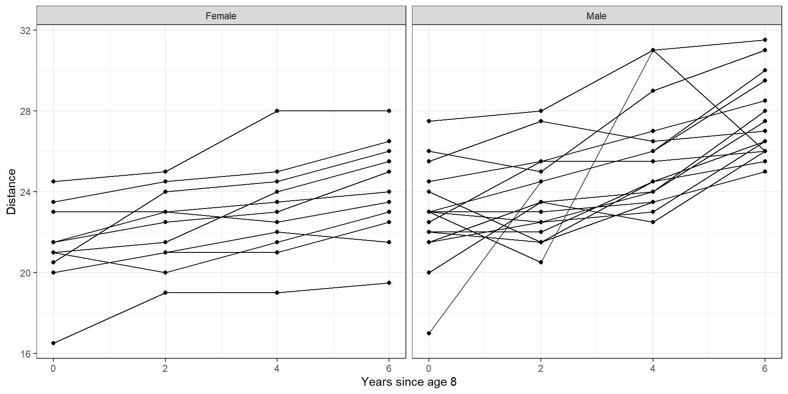
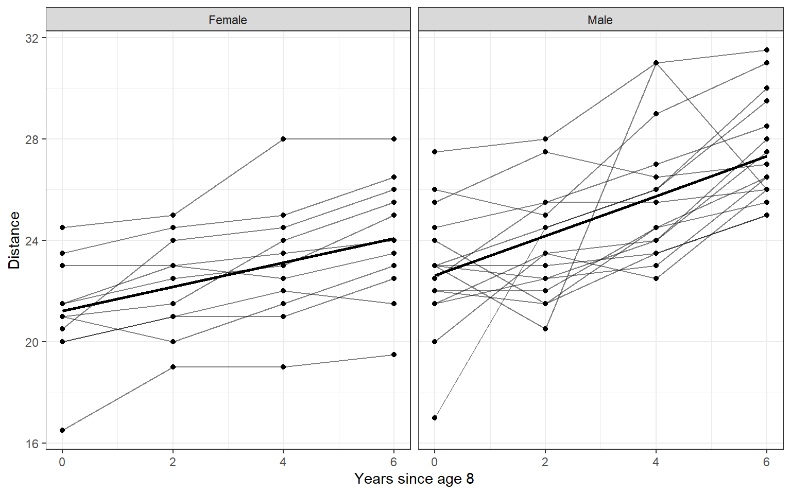

Focus attention on the model for the mean, treat correlation structure as a “nuisance”
Validity of inferences about regression parameters protected by using “robust” SEs (for large # clusters)
Useful mainly when data are balanced (number of measurements similar across clusters)
Linear Mixed Models: models the entire joint distribution of the observations, including covariance structure
“Full probability model” : Likelihood-based estimation
Estimators fully efficient when model is correct (i.e. ‘smallest possible SEs’)
Useful when variance components or correlation structure is of interest
3.1 Data
Longitudinal data: Potthoff and Roy (1964):
Measured distance from centre of the pituitary gland to the pterygomaxillary fissure by x-ray (important in orthodontics)
Measured for boys and girls with aim to understand changes with age and by sex
Measured at ages 8, 10, 12, 14
Rescaled to show time since age 8
library(mice)library(ggplot2)library(dplyr)library(tidyr)library(stringr)data <- potthoffroy |>pivot_longer(cols =-c(id,sex)) |>mutate(age =str_extract(name,'\\d+') |>as.numeric(),sex =factor(sex,labels =c("Female","Male")),time = age-8,y = value)data |>ggplot(aes(x = time, y = y))+geom_line(aes(group = id))+geom_point()+facet_wrap(~sex)+labs(x ="Years since age 8", y ="Distance")+theme_bw()

3.2 Random intercepts model
In this example, we only consider the male group, and focus on within cluster comparison (change over time). In linear mixed model, we extend to compare the variation between individuals or subjects by adding one level to the simple linear regression \(Y_j = \beta_0 + \beta_1 t_j\).
The “two level” or “hierarchical” model:
Level 1: Describes variation within individuals
Straight line (linear regression) for each subject
\(\beta_{0i}\) is subject-specific intercept
\(\beta_{1}\) is the common slope
Level 2: Describes variation in intercepts between individuals
\(\beta_{0i} = \beta_0 + b_{0i}\) with \(b_{0i} \sim N(0,\sigma^2_{b0})\)
Linear mixed model fit by REML ['lmerMod']
Formula: y ~ time + (1 | id)
Data: data
Subset: (sex == "Male")
REML criterion at convergence: 273.4
Scaled residuals:
Min 1Q Median 3Q Max
-3.00805 -0.64069 0.00783 0.53448 3.05295
Random effects:
Groups Name Variance Std.Dev.
id (Intercept) 2.641 1.625
Residual 2.816 1.678
Number of obs: 64, groups: id, 16
Fixed effects:
Estimate Std. Error t value
(Intercept) 22.61563 0.53690 42.123
time 0.78438 0.09382 8.361
Correlation of Fixed Effects:
(Intr)
time -0.524
Plotting how random intercept model fit the data
data |>filter(sex =="Male") |>mutate(fitted =predict(random_intecept_model)) |>ggplot(aes(x = time, y = fitted))+geom_line(aes(group = id))+geom_point(aes(y = value))+labs(x ="Years since age 8", y ="Distance")+theme_minimal()
random_slope_intecept_model <-lmer(y ~ time + (1+ time | id),data = data, subset = (sex =="Male"))summary(random_slope_intecept_model)
Linear mixed model fit by REML ['lmerMod']
Formula: y ~ time + (1 + time | id)
Data: data
Subset: (sex == "Male")
REML criterion at convergence: 273.1
Scaled residuals:
Min 1Q Median 3Q Max
-2.65543 -0.59382 0.01946 0.57552 3.15773
Random effects:
Groups Name Variance Std.Dev. Corr
id (Intercept) 3.04625 1.7454
time 0.03562 0.1887 -0.34
Residual 2.58906 1.6091
Number of obs: 64, groups: id, 16
Fixed effects:
Estimate Std. Error t value
(Intercept) 22.6156 0.5511 41.041
time 0.7844 0.1016 7.722
Correlation of Fixed Effects:
(Intr)
time -0.558
Plotting how random intercept model fit the data
data |>filter(sex =="Male") |>mutate(fitted =predict(random_slope_intecept_model)) |>ggplot(aes(x = time, y = fitted))+geom_line(aes(group = id))+geom_point(aes(y = value))+labs(x ="Years since age 8", y ="Distance")+theme_minimal()
In the previous section, we only consider the male group, and focus on within cluster comparison (change over time). In this section, we will explore the following question:
Is average rate of growth the same for males and females?
What is the variability in rate of growth within each sex?
Is rate of growth correlated with size/distance at age 8?
We fit random intercepts and slopes model, and allow subject-specific intercept and slope to depend on sex
Linear mixed model fit by REML ['lmerMod']
Formula: y ~ sex * time + (1 + time | id)
Data: data
REML criterion at convergence: 432.6
Scaled residuals:
Min 1Q Median 3Q Max
-3.1681 -0.3859 0.0071 0.4452 3.8495
Random effects:
Groups Name Variance Std.Dev. Corr
id (Intercept) 3.23394 1.7983
time 0.03252 0.1803 -0.09
Residual 1.71621 1.3100
Number of obs: 108, groups: id, 27
Fixed effects:
Estimate Std. Error t value
(Intercept) 21.2091 0.6350 33.401
sexMale 1.4065 0.8249 1.705
time 0.4795 0.1037 4.623
sexMale:time 0.3048 0.1347 2.262
Correlation of Fixed Effects:
(Intr) sexMal time
sexMale -0.770
time -0.396 0.305
sexMale:tim 0.305 -0.396 -0.770
Plotting
data |>mutate(fitted =predict(random_slope_intecept_model2)) |>ggplot(aes(x = time, y = fitted))+geom_line(aes(group = id))+geom_point(aes(y = value))+facet_wrap(~sex)+labs(x ="Years since age 8", y ="Distance")+theme_bw()
95% of Female have growth rate 0.48 +/- 1.96*0.18 = 0.13 to 0.83
95% of Male have growth rate 0.78 +/- 1.96*0.18 = 0.43 to 1.13
\(Corr(b_{0i},b_{1i}) = \rho_b = -0.09\): Little correlation between initial size at age 8 and growth rate between ages 8-14 years (assumes common correlation for males and females)
data |>mutate(fitted =predict(random_slope_intecept_model2),pred.pop =predict( random_slope_intecept_model2,re.form =NA )) |>ggplot(aes(x = time))+geom_line(aes(y = pred.pop,group = id),size =1)+geom_line(aes(y = value,group = id),alpha = .5)+geom_point(aes(y = value))+facet_wrap(~sex)+labs(x ="Years since age 8", y ="Distance")+theme_bw()

The lines that connected the points are the raw data. The bold lines are the outcome of the model